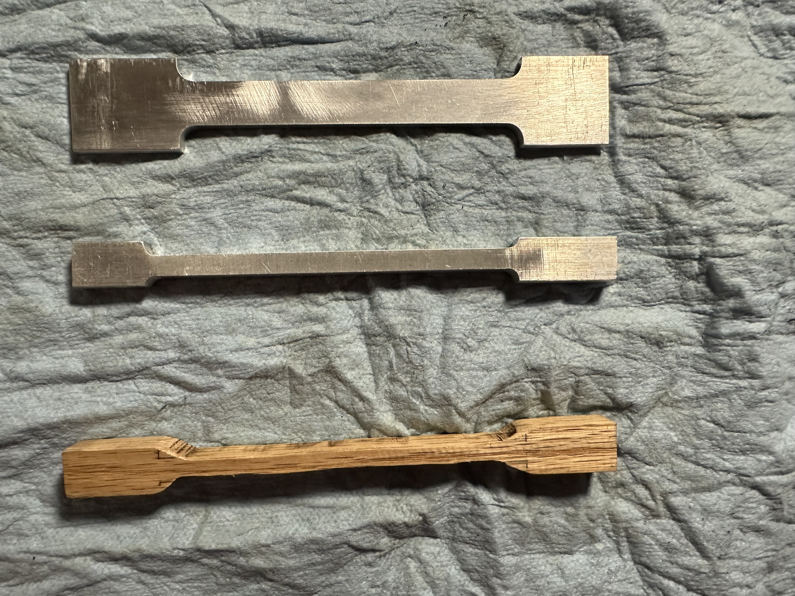

I designed a laser-cut bottle opener inspired by the Excalibur sword, complete with a custom locking mechanism. Using SolidWorks, I created a spring-like fixture and an interlocking peg-and-slot system that required no glue. A stress analysis confirmed the design could withstand 100 N of finger pressure, ensuring durability and functionality.

Conducted a project in Engineering Mechanics focusing on material identification through tensile testing, analyzing stress-strain data to determine the mechanical properties and material composition of various samples, including aluminum alloys.
Designed and built a Tone Control and Karaoke Circuit featuring customizable audio settings, karaoke voice suppression, and LED volume feedback, integrating a mixer, tone control, volume control, and attenuator for enhanced audio output. This project involved schematic design, circuit board simulation, and real-life implementation.
For the Fertilizer Sprinkler Prototype Project, I identified the time-consuming nature of gardening as a core problem through extensive brainstorming and sketching. Utilizing SolidWorks, Arduino Uno, and C++, I designed and developed a sprinkler system that simultaneously sprays water and fertilizer with automatic control features. This project enhanced my mechanical engineering and coding skills, resulting in a functional prototype that addresses common gardening challenges.
For the Goodwill Hanger Project, I leveraged my SolidWorks expertise to design a hanger with clips that open and close at the press of a button. My team and I conducted thorough research, tested various prototypes, and integrated our findings into a functional product.
I repaired a 3D printer by diagnosing and fixing extruder issues, enhancing both its mechanical and software systems. This process involved troubleshooting and understanding electronics, ultimately improving the printer's performance and reliability.